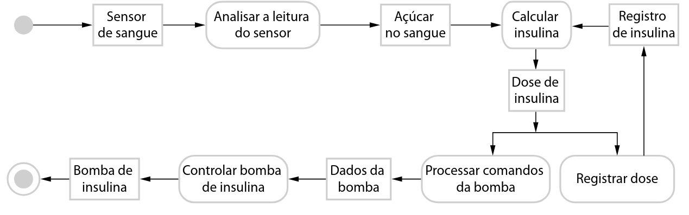
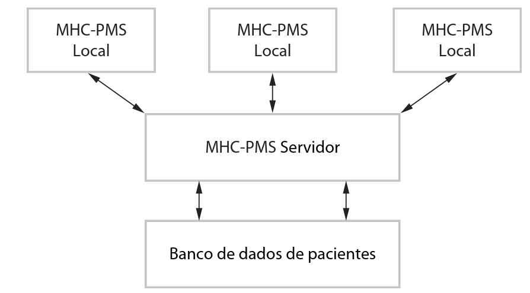
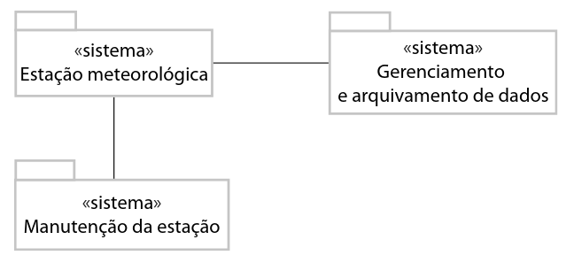

Hoje, softwares não são apenas ferramentas de cálculo, mas a espinha dorsal de:
Infraestruturas críticas
Telecomunicações
Exploração espacial
O Problema Central
Métodos antigos de desenvolvimento não suportam a complexidade atual. Precisamos de novas técnicas para garantir segurança e eficiência.
Desenvolvimento Profissional de Software
A distinção fundamental entre "programar" e "engenharia".
Programação Pessoal
Feito para si mesmo (cientistas, hobbistas).
Objetivo cumprido se "funciona".
Geralmente desenvolvido por indivíduos isolados.
Não requer documentação formal.
Desenvolvimento Profissional
Propósito comercial/negócio.
Usado por outras pessoas.
Desenvolvido por equipes.
Mantido por muitos anos.
Software = Código + Documentação + Dados de Configuração.
Categorias de Produtos de Software
Categoria
Descrição
Controle da Especificação
Produtos Genéricos
Sistemas stand-alone vendidos no mercado aberto (Ex: Excel, CAD).
Organização desenvolvedora.
Produtos sob Encomenda
Encomendados por cliente específico para problema particular (Ex: Controle de tráfego aéreo).
Organização cliente.
A Convergência (ERP)
A distinção está menos clara com sistemas ERP (ex: SAP), que são produtos genéricos adaptados massivamente para regras de negócio específicas de clientes.
O Que é Engenharia de Software?
Definição
É uma disciplina da engenharia preocupada com todos os aspectos da produção de software, desde a especificação até a manutenção.
Distinções Disciplinares
Diferente da Ciência da Computação: A Ciência foca em teoria e fundamentos. A Engenharia foca em problemas práticos de desenvolver e entregar software útil.
Diferente da Engenharia de Sistemas: A Engenharia de Sistemas lida com todo o sistema (hardware, política, processos). A Engenharia de Software é parte desse todo.
Segurança e Confiança: Proteção contra ataques e falhas críticas.
O Processo de Software (4 Atividades Fundamentais)
Especificação: O que o sistema deve fazer.
Desenvolvimento: Projeto e implementação.
Validação: Garantia de que atende ao cliente.
Evolução: Adaptação a mudanças.
Atributos de um Bom Software
Não basta funcionar (funcionalidade); importa como se comporta (não-funcional).
Manutenibilidade:
Deve poder evoluir.
Crítico, pois a mudança é inevitável.
Confiança e Proteção:
Confiabilidade, segurança e proteção.
Não causar prejuízo em falha.
Eficiência:
Uso racional de recursos (memória, processador).
Responsividade adequada.
Aceitabilidade:
Compreensível e usável.
Compatível com outros sistemas.
Questões de Fixação - 1 / 3
1. Explique por que um programa que funciona perfeitamente para seu autor pode ser considerado inadequado sob a ótica da Engenharia de Software profissional. Qual o papel da documentação nesse contexto?
2. Compare produtos genéricos com produtos sob encomenda. De quem é a responsabilidade de controlar a especificação em cada caso? Como os sistemas ERP impactam essa distinção?
3. Defina a Engenharia de Software e explique como ela difere da Ciência da Computação e Engenharia de Sistemas (Teoria vs. Prática / Software vs. Sistema Completo).
4. Explique os quatro atributos essenciais para um bom software: Manutenibilidade, Confiança/Proteção, Eficiência e Aceitabilidade.
Diversidade na Engenharia de Software
Não existe "Bala de Prata"
O método certo depende do tipo de aplicação. Um jogo requer processos diferentes de um controle de voo.
Tipos de Aplicações
Stand-alone: Rodam localmente (Office, CAD).
Interativas Baseadas em Transações: Executam remotamente (E-commerce, Nuvem).
Processamento de Lotes: Grandes volumes de dados (Folha de pagamento).
Entretenimento: Jogos (Qualidade de interação é crítica).
Modelagem e Simulação: Uso científico, alto desempenho.
Coleta de Dados: Sensores em ambientes (muitas vezes hostis).
Sistemas de Sistemas: Integração de outros softwares.
Engenharia de Software e a Internet
A evolução da Web para plataforma de aplicações mudou as regras.
Software como Serviço (SaaS)
Não se instala/compra software, paga-se pelo uso.
Redução de custos de instalação e manutenção.
Mudanças na Construção de Sistemas
Reúso Massivo: Integração de componentes preexistentes é dominante.
Desenvolvimento Incremental: Especificação completa antecipada é impraticável.
Interfaces Ricas: Tecnologias como AJAX, limitadas pelo navegador.
Ética na Engenharia de Software
Responsabilidades além do técnico. Padrões de honestidade e integridade são inegociáveis.
4 Pilares da Responsabilidade (Mesmo sem lei explícita)
Confidencialidade: Respeitar segredos do cliente/empregador.
Competência: Não aceitar trabalhos fora da sua capacidade.
Propriedade Intelectual: Respeitar patentes e copyright.
Mau Uso de Computadores: Não usar habilidades para prejudicar (vírus, invasão).
Código de Ética e Dilemas
Código de Ética da ACM/IEEE (Resumido)
Engenheiros de software devem se comprometer a fazer da profissão algo benéfico e respeitado, aderindo a oito princípios fundamentais:
PÚBLICO: Agir de acordo com o interesse público.
CLIENTE E EMPREGADOR: Agir no melhor interesse do cliente/empregador, consistente com o interesse público.
PRODUTO: Garantir que os produtos atendam aos mais altos padrões profissionais possíveis.
JULGAMENTO: Manter integridade e independência no julgamento profissional.
GERENCIAMENTO: Promover uma abordagem ética no gerenciamento de software.
PROFISSÃO: Aprimorar a integridade e reputação da profissão.
COLEGAS: Auxiliar e ser justo com os colegas.
SI PRÓPRIO: Participar de aprendizagem contínua e promover a prática ética.
Dilemas Éticos Reais
Segurança Crítica vs. Prazos: O empregador pressiona lançar sem testes completos. O dever com a segurança pública pode sobrepor a confidencialidade?
Sistemas Militares: Trabalhar em sistemas de armas vs. princípios pessoais.
A transparência prévia é essencial para evitar conflitos.
Questões de Fixação - 2 / 3
5. "Não existe uma bala de prata". Utilize os exemplos de Sistemas de Controle Embutidos e Sistemas de Entretenimento para justificar por que o mesmo processo não se aplica a todos.
6. Como o conceito de "Software como Serviço" (SaaS) impactou a forma como sistemas são especificados e a importância do reúso?
7. Um engenheiro especialista em front-end é convidado para um sistema nuclear. Baseado no princípio da Competência, como proceder? Explique a regra de Confidencialidade.
8. Discuta o dilema ético de um lançamento prematuro sem testes de segurança: conflito entre "Interesse do Cliente/Empregador" e "Interesse Público".
Estudo de Caso 1: Bomba de Insulina
Tipo: Sistema Embutido | Foco: Segurança Crítica
Simula o pâncreas. Coleta dados do sensor e injeta insulina.
Requisitos Críticos:
Disponibilidade: Sempre disponível.
Confiabilidade: Dose exata (falha = risco de morte). Software gravado em ROM (difícil alteração).
Lógica da Bomba de Insulina
Transformação da leitura do sensor em comandos de controle.

Estudo de Caso 2: MHC-PMS
Tipo: Sistema de Informação | Foco: Privacidade e Hibridismo
Gerencia dados de clínicas de saúde mental.

Características:
Híbrido: Banco de dados central + PCs desconectados (para clínicas sem rede).
Privacidade: Dados extremamente sensíveis.
Segurança: Alertas sobre pacientes perigosos (internação compulsória).
Estudo de Caso 3: Estação Meteorológica
Tipo: Coleta de Dados | Foco: Autonomia e Ambiente Hostil
Monitoramento climático em áreas remotas (deserto).

Sistemas:
Estação: Coleta e processamento inicial.
Gerenciamento de Dados: Arquivamento central.
Manutenção: Monitoramento via satélite e update remoto.
Requisitos da Estação Meteorológica
Autonomia: Autossuficiente em energia (solar/eólica) e gestão de consumo.
Resiliência: Lidar com falhas de comunicação (satélite) e guardar dados localmente.
Manutenção Remota: Reconfiguração e atualização de software via satélite (visitas físicas são caras).
Questões de Fixação - 3 / 3
9. Analise a Bomba de Insulina. Por que a "Confiabilidade" é o requisito mais crítico e como isso influencia a decisão de gravar o software em memória ROM?
10. No sistema de Estação Meteorológica, explique como os requisitos de "Autonomia" e "Manutenção Remota" diferenciam este projeto de um sistema de gestão corporativo comum (como o MHC-PMS).
Próximos Passos
No próximo capítulo, Modelos de Processo de Software, exploraremos:
Modelos Cascata, Incremental e Ágil.
Como organizar as atividades fundamentais (especificação, desenvolvimento, validação, evolução).
Escolha do modelo adequado para cada cenário visto hoje.